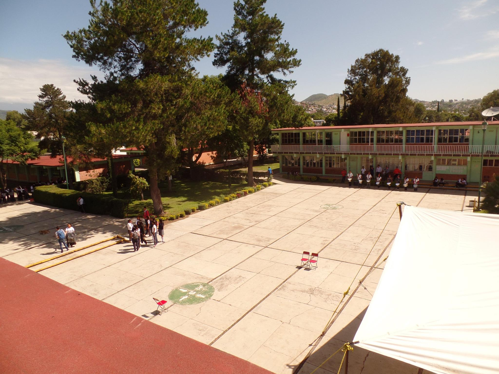

CBTis 16 Atlixco
CBTis N°16
- Técnico en Programación
- Técnico en Electricidad
- Técnico en Mecánica Industrial
- Técnico en Logística
¡Ven y se parte de nosotros!
Espacios que ofrecemos
- Aulas
- Laboratorio de Química
- Laboratorio de Logística
- Laboratorio de Física
- Laboratorio de Cómputo
- Laboratorio de Ingles
- Taller de Programación
- Taller de Automatización
- Biblioteca con servicio de cómputo con servicio de internet
- Edificio de oficinas administrativas 
Espacios deportivos:
- Campo De fútbol
- Cancha de voleibol
- Cancha de basquetbol
- Plaza cívica
Requisitos
- Constancia de estudios de ser alumnos de 3er año de secundaria
- 1 copia de acta de nacimiento
- 1 copia de curp(ampliación tamaño carta)
- 2 fotografias tamaño infantil
- Copia del IFE del padre o tutor
- Costo de la ficha: $500
- Febrero 2 al 23 de Junio del 2016
- 24 de junio de 2016 a las 7:30am
- Del 6 al 12 de julio de 2016
- Llenar solicitud de incripción
- Firmar carta compromiso
- Certificado de secundaria,original y 2 copias
- 2 copias de CURP
- 2 copias de comprobante de domicilio
- 6 fotografias tamaño infantil(*blanco y negro* no instantaneas)
- Certificado médico de buena salud con grupo sanguíneo y factor RH